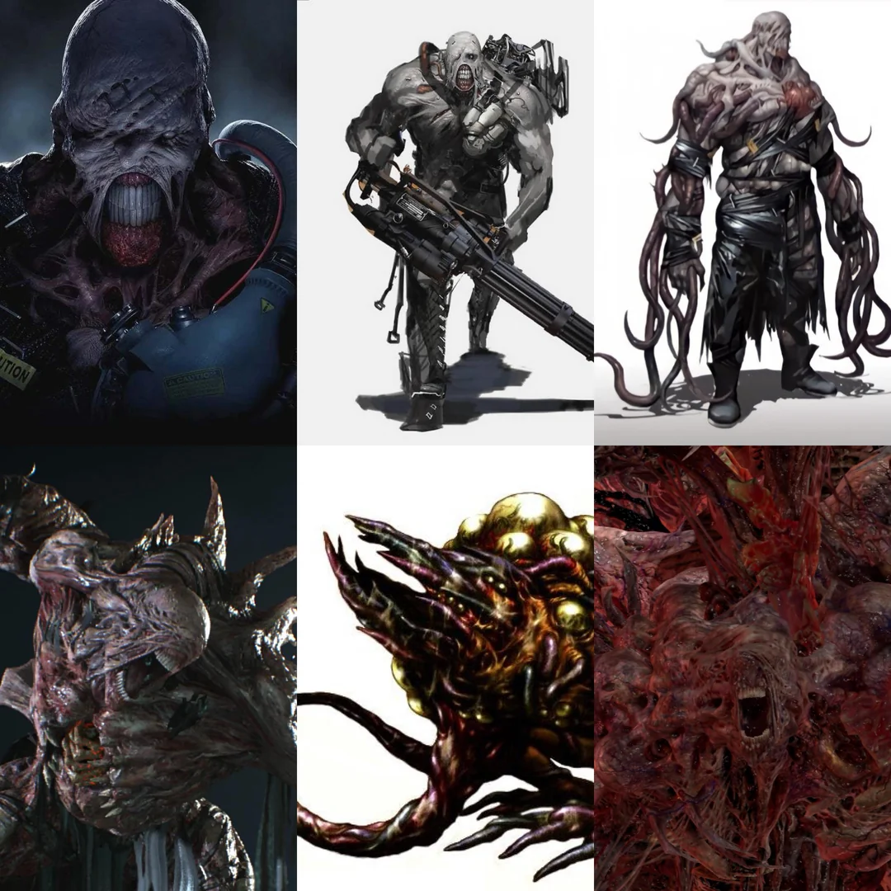
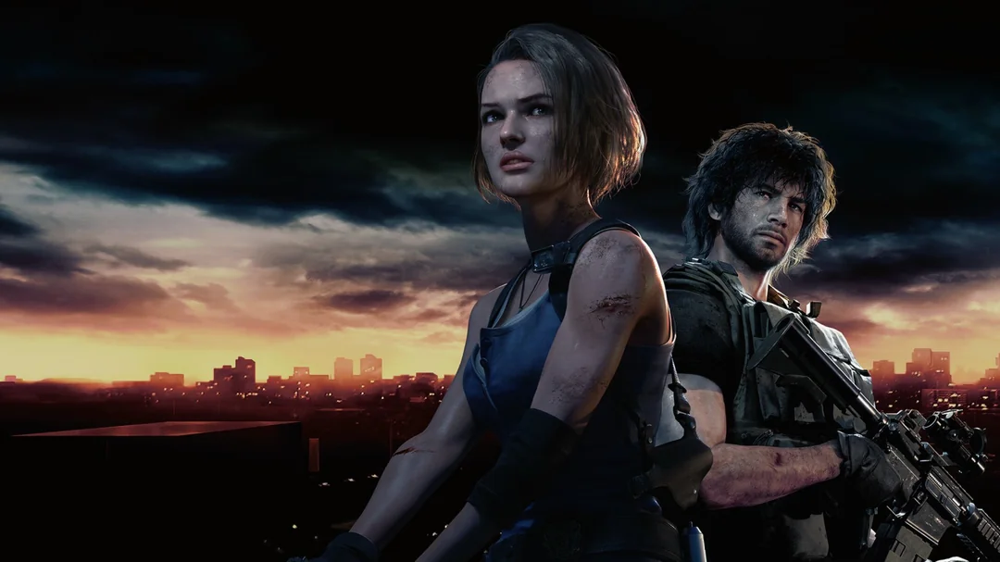
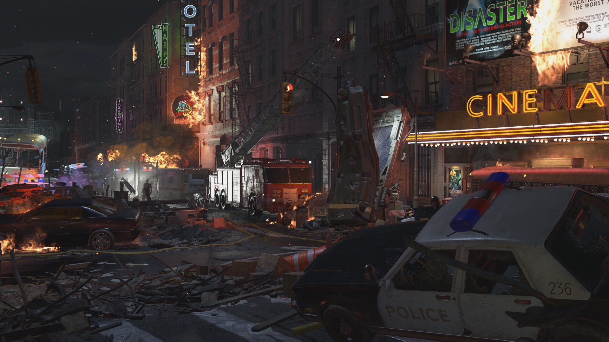

Visão geral

Resident Evil 3: Nemesis se passa durante e após os eventos de RE2, acompanhando Jill Valentine em sua tentativa de escapar de Raccoon City durante o colapso total da cidade.
A grande ameaça do jogo é o Nemesis, uma arma biológica criada pela Umbrella para caçar e eliminar os membros da S.T.A.R.S., o que dá ao jogo um clima constante de perseguição.
Gameplay e mecânicas
RE3 trouxe algumas novidades importantes em relação aos anteriores:
- Sistema de esquiva manual (dodge) para fugir de ataques;
- Criação de munição usando pólvoras diferentes;
- Momentos de decisão rápida, onde o jogador escolhe como reagir a situações de perigo;
- Mais foco em ação, mas ainda com forte elemento de survival horror.
A presença imprevisível do Nemesis, capaz de aparecer em vários pontos e perseguir Jill por áreas que antes pareciam seguras, foi um grande destaque do jogo.
História e atmosfera
O jogo mostra mais da cidade de Raccoon City em ruínas, com ruas destruídas, incêndios, barricadas e a tentativa desesperada de alguns sobreviventes.
Personagens como Carlos Oliveira e outros membros da U.B.C.S. aparecem para complementar a narrativa, que mostra diferentes lados da crise causada pela Umbrella.
A atmosfera é mais dinâmica, com mais momentos de perseguição, explosões e cenas de ação que contrastam com o terror mais contido da mansão de RE1.
Análise
Resident Evil 3 é lembrado principalmente pela figura icônica do Nemesis e pelo ritmo mais acelerado. Alguns jogadores o veem como um “spin-off turbinado”, enquanto outros o consideram parte essencial da trilogia clássica.
As novas mecânicas de esquiva e criação de munição deram mais profundidade ao combate, sem abandonar o gerenciamento de recursos.
Vendas aproximadas: 3,5 milhões de cópias na era original.
Impacto: Definiu o arquétipo do inimigo perseguidor em games de horror.
Curiosidades
- Nemesis se tornou um dos vilões mais famosos da franquia.
- O jogo originalmente se chamaria “Biohazard: Last Escape” no Japão.
- Teve um remake lançado em 2020, reimaginando a história com gráficos modernos.
- Parte dos locais de RE3 se passa em áreas próximas às vistas em RE2.
Galeria de imagens


